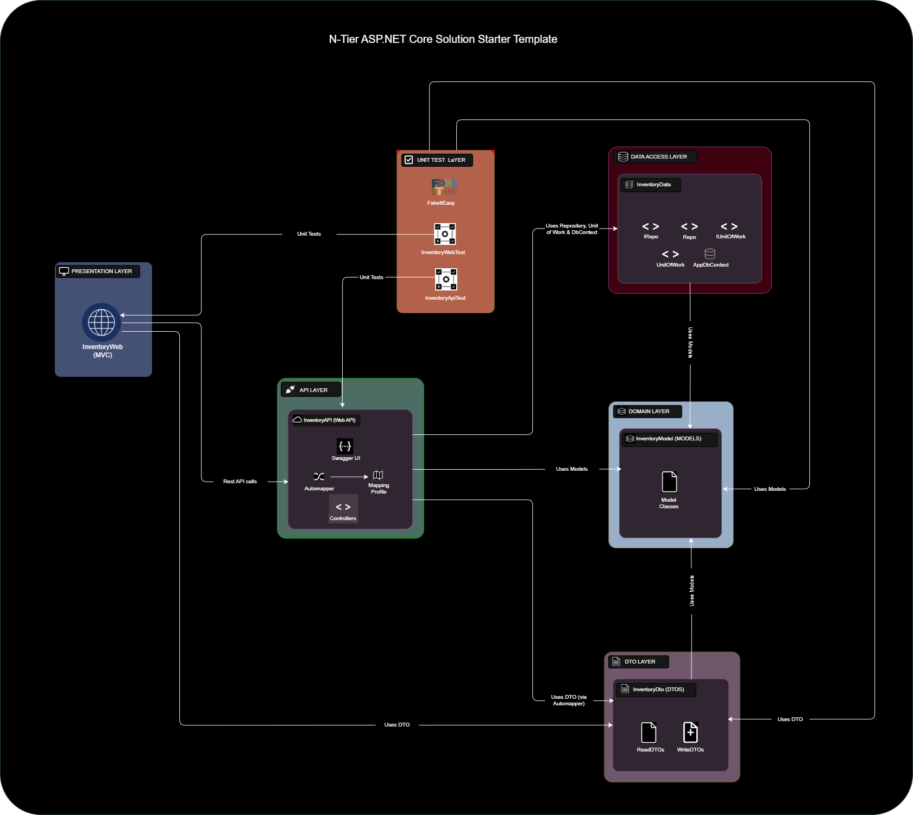
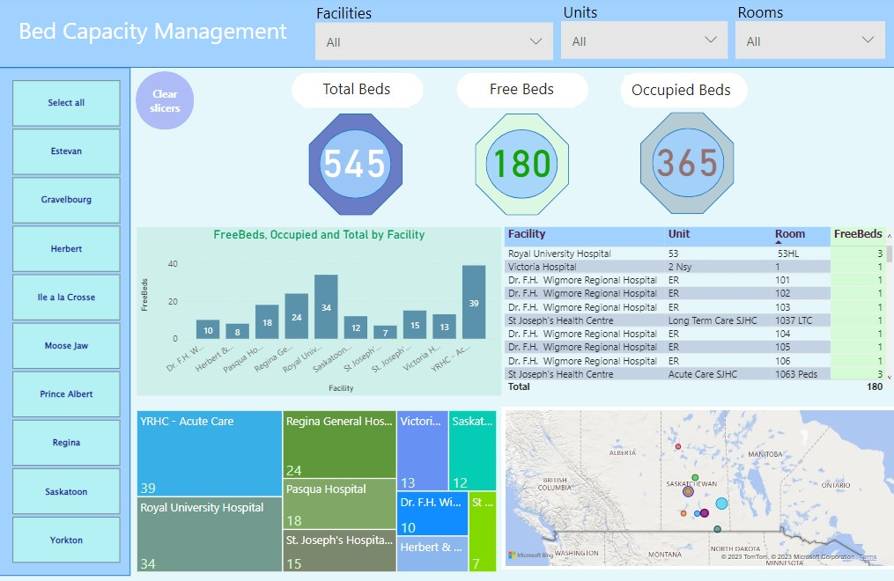

A modern, multi-project ASP.NET starter template built in Visual Studio 2022, following the N-tier
architecture with an emphasis on loose coupling. It features two primary domain models, Products and
Suppliers, along with a REST API client, an MVC web front-end, and integrated unit testing. These
components are designed to work seamlessly together, forming a cohesive and extensible codebase.
The solution adopts the Unit of Work design pattern and a clear Separation of Concerns,
ensuring maintainability and scalability throughout the development lifecycle. This template provides a
strong foundation for building professional-grade web applications that are easy to extend, test, and
deploy.

A Visual Studio 2022 application that stores student information, processes scores and display reports
using C# and ASP.NET Core MVC.
It is based on the N-tiers architecture and the unit of work design pattern. It uses SQL Server, EF Core,
Jquery, Bootstrap 5, Toastr, & others.
This Azure Databricks solution ingests roads and vehicles data in batches using Spark Structured Streaming,
optimizing the ingestion and transformation process.
The data goes through a series of transformations in a medallion architecture pipeline, starting from the
landing layer and progressing through the bronze, silver, and gold layers. The final gold layer serves as
the data source for reporting in Power BI, offering valuable insights for decision-making.
The solution operates within a workflow and utilizes the Unity Catalog framework for data governance,
ensuring secure and well-organized data management.
This solution is an analytical engineering initiative that ingests data from various sources using AWS
Lambda and Airbyte.
The ingested data undergoes three stages of transformation with dbt, continuously transitioning
progressively transformed data from one schema to another within the Snowflake data warehouse.
The final transformed data is used to perform analytics and generate business intelligence reports with
Metabase.
This data engineering solution leverages Azure Data Factory pipelines to ingest data from cloud sources into
Azure Data Lake Storage as part of a streamlined workflow.
The ingested data is then processed through transformations using Azure Databricks and machine learning
models to extract meaningful insights.
The transformed data is integrated into a Lakehouse architecture via Azure Synapse Analytics, enabling
advanced analytics and data-driven intelligence.
Finally, additional analytics and visualizations are performed on the datasets in Power BI to support
informed decision-making.
The project is an ETL initiative using SQL Server Integration Services (SSIS). It involves creating packages
for dynamically importing various files into one or more tables, and dynamically exporting data from
multiple tables to different files. Additionally, the project supports incremental loading, as well as
update and delete operations using both CDC (Change Data Capture) and non-CDC methods.
It utilizes scripts, variables, control flow, and data flow techniques. The data import and export module is
designed to efficiently handle large data sets by using a batch size variable, which determines the number
of records processed in each batch, while ensuring data integrity throughout the ETL process.
Additionally, the project allows for easy configuration of variable values. A sample database file, folder
structure, and test files are provided to simplify setup and testing.
This is a VBA project that extracts and reconciles data from two Excel sources using the power of VBA.
The extracted data is cleansed, shaped, and reconciled beyond the capabilities of Excel, offering enhanced
data processing.
This is a VBA project that dynamically extracts, splits, and organizes data from multiple tabs in Excel
files
located in multiple nested folders.
The data is then restructured into a similar dynamically created nested structure based on different dynamic
codes.

This is a Power BI project that performs bed capacity analytics and visualizations showing free and occupied
beds in room(s), unit(s), within one or more medical facilities and communities.
This is a Power BI project that performs account monitoring analytics and visualizations, showing insights
on User and Service accounts, stale accounts, and accounts whose passwords need to be reset.
These are collections of SQL queries showing various analytics and aggregates that provide insights to data.
This project is a reporting solution using SQL Server Reporting Services (SSRS).
It contains various reports that demonstrate the features of SSRS. Examples of report samples in the project
include Sales Summary, Product List, Sales Matrix, Charts, Map, and others.
A sample database file that can be used for testing is included with the project, providing the necessary
data to generate and evaluate the reports.